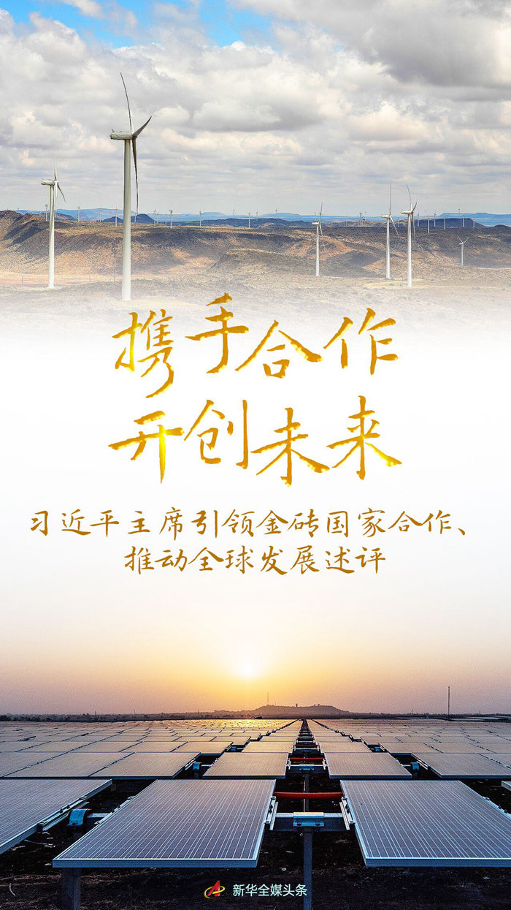
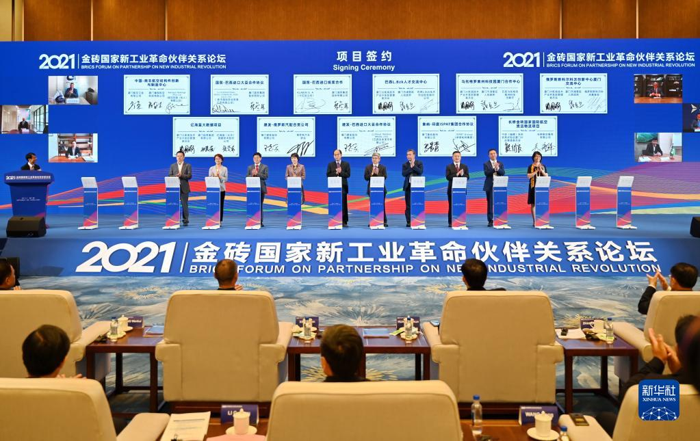

携手合作 开创未来——习近平主席引领金砖国家合作、推动全球发展述评

新华社北京6月21日电 题：携手合作 开创未来——习近平主席引领金砖国家合作、推动全球发展述评
新华社记者
志合者，不以山海为远。
6月下旬，金砖国家合作再次迎来高光时刻。国家主席习近平将在北京主持金砖国家领导人第十四次会晤、全球发展高层对话会，以视频方式出席金砖国家工商论坛开幕式并发表主旨演讲。
2013年以来，习近平主席主持或出席金砖国家领导人历次会晤，为引领金砖国家合作贡献中国智慧，为推动全球发展注入中国动力，在金砖国家合作进程中留下深刻的“中国印记”。时光荏苒，记录下中国领导人推动构建人类命运共同体的辉煌篇章。

把金砖国家合作伙伴关系发展好，把金砖国家合作机制建设好
我们来自世界四大洲的５个国家，为了构筑伙伴关系、实现共同发展的宏伟目标走到了一起，为了推动国际关系民主化、推进人类和平与发展的崇高事业走到了一起。
-
2014年7月，在巴西福塔莱萨，习近平主席提出“开放、包容、合作、共赢”的金砖国家合作伙伴精神，强调金砖国家合作蓝图就是“发展金砖国家更紧密、更全面、更牢固的伙伴关系”。
-
2015年7月，在俄罗斯乌法，习近平主席提出构建维护世界和平的伙伴关系、促进共同发展的伙伴关系、弘扬多元文明的伙伴关系、加强全球经济治理的伙伴关系四点主张。“四大伙伴关系”定位，为金砖国家未来合作提供了新思路。
-
2016年10月，在印度果阿，习近平主席总结金砖国家合作10年经验，提出要继续扩大和巩固金砖国家“朋友圈”，保持开放、包容，谋求共同发展。
-
牢牢抓住这一“最大公约数”，发扬金砖国家合作伙伴精神，金砖国家合作日趋紧密，并相继同非洲国家领导人，南美国家领导人，欧亚经济联盟、上海合作组织成员国、观察员国及受邀国领导人，“环孟加拉湾多领域经济技术合作倡议”成员国领导人等展开对话，“朋友圈”不断扩大，持续凝聚发展中国家团结自强的力量。
-
理念指引行动。从无到有，从小到大，金砖国家合作逐步形成涵盖政治、经济、金融、贸易、社会、人文等多领域、多层次、全方位的架构。新开发银行、应急储备安排机制、工商理事会、智库理事会等合作机制启动，一批务实合作成果相继落地生根、开花结果。
-
2017年9月，鹭岛厦门。金砖国家合作开启第二个“金色十年”的大门。
-